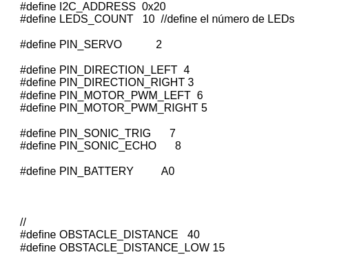
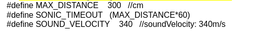
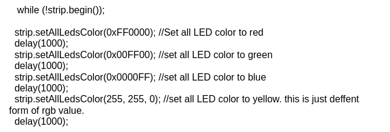
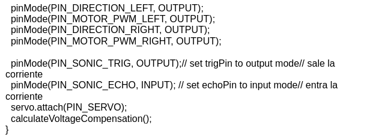
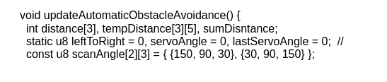
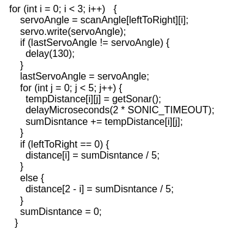
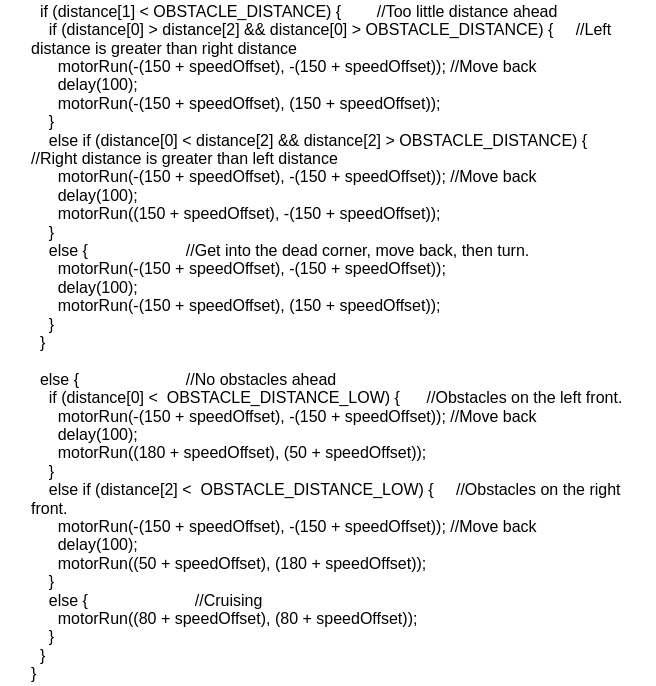
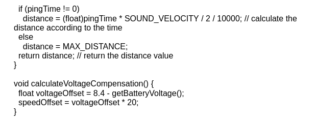

Programación

Programación del robot
* El código incluye estas librerias.

* Esto lo que hace es definir las variables.

* Son variables para que el sensor calcule distancias.

* Esta configuración está dentro del setup y es la configuración de los colores del coche.

* Esto está dentro del setup y sirve para decirle a cada PIN si va a entrar corriente o va a salir.
* Hace una función llamada updateAutomaticObstacleAvoidance.

* Son variables que se va a poner todo dentro de void updateAutomaticObstacleAvoidance.

* Esto lo que hace es hacer girar el ultrasonido.

* Juega con las distancias del ultrasonido y los movimientos del coche para hacerlo funcionar.

* Calcula la distancia y la velocidad.
VOLVER